引言
大多数同学学习FSMC总线是因为正点原子或者类似开发板使用的LCD屏，但是由于驱动LCD屏只是用了FSMC的一个特性，就会导致以偏概全，难以理解。所以本文从本质的角度解释FSMC总线，但最终让你明白为啥它能够驱动LCD屏。
FSMC 对比 SPI/I2C
类似于I2C和SPI等传输数据都是通过先选择要传输的位置，再在_一条_数据线上传输数据。
如果需要向某些设备地址里写数据，I2C是通过在_一条_数据线上先传输地址，再传输数据的方式实现。
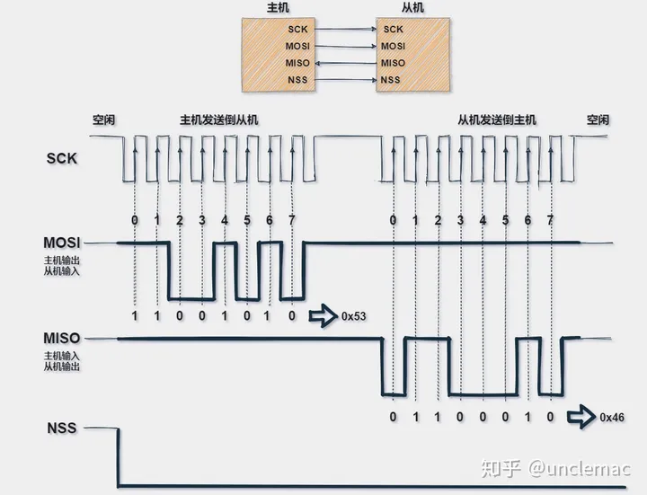
SPI通信协议
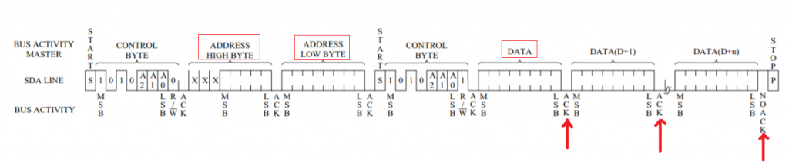
I2C读写时序
那么FSMC总线就好理解了，FSMC是“膨胀”了的上述两种协议，它不仅拥有16条数据线，还拥有26条地址线，能够同时并行传输数据。
如果SPI需要传输二进制 -1010-，需要把这4个二进制数放在_1根传输线_上一个一个传输过去。
而FSMC把这4个二进制数同时放在_4根数据线_上，同时传过去。
速率可想而知。
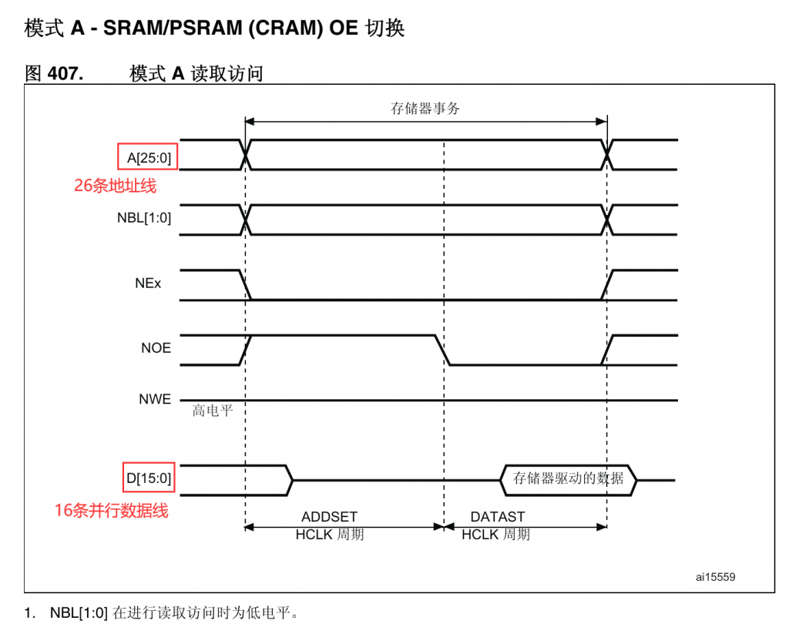
FSMC 模式A时序
地址线
那么地址线的作用是什么呢？那么我们需要知道FSMC最初被设计出来是干什么的，FSMC的全称是Flexible static memory controller（灵活的静态存储器控制器），通过 FSMC，STM32可以通过FSMC与SRAM、ROM、PSRAM、Nor Flash和NandFlash存储器的引脚相连，从而进行数据的交换。
简称：扩展内存。
那么内存是什么呢？我认为内存就是一张excel表格，
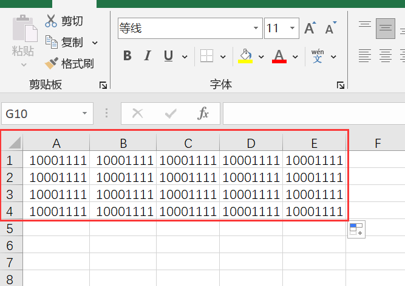
内存是什么？
我们想要定位内存里数据的位置的时候，是通过行列坐标的，比如A1、A2、B1、D1等等，那么这个坐标就是它的地址。而数据在内存中存储的时候并不是以二维（行、列）存储的，而是连续存储的，类似于一个很长很长的数组，但是无论如何，你只要有地址就能够找到你想要找到的数据。
由于FSMC是需要扩展内存，那么它就必须要有定位内存中数据的功能，这就是它的地址线发挥作用的地方。
我们继续看这张时序图：
FSMC 模式A时序
当数据在传输的时候，地址线也在传输数据，所以如果我们要向上述表格中的A0地址传输0X11这个数据，我们只需要在地址线上放上 A0，同时在数据线上放上 00010001（这个例子并没有完全用到16根数据线和26条地址线），那么FSMC会帮助你自动进行传输。
驱动LCD
我觉得目前网上的教程缺失的是对FSMC\_An（地址线）的解释不够，导致无法理解为什么范例程序中分别向两个地址（正点原子中使用的是A6地址线）写数据就能代表修改REG和DATA。
言归正传，在上一章节中我们知道了地址线和数据线是同时有数据在传输的。
我们现在看一下LCD的引脚功能：
信号线
引脚
功能
LCD\_DB\[15:0\]
D\[15:0\]
数据信号
LCD\_RD
RDX
读数据信号，低电平有效
LCD\_RS
D/CX
数据/命令信号，高电平时，D\[15:0\]表示的是数据(RGB像素数据或命令数据)，低电平时D\[15:0\]表示控制命令
LCD\_RESET
RESX
复位信号，低电平有效
LCD\_WR
WRX
写数据信号，低电平有效
LCD\_CS
CSX
片选信号，低电平有效
LCD\_BK
\-
背光信号，低电平点亮
GPIO23
\-
空引脚，不需要连接
RST
与触摸IC相连
触摸IC的复位引脚
INT
与触摸IC相连
触摸IC的中断信号引脚
SCL
与触摸IC相连
触摸IC的中断信号引脚
SDA
与触摸IC相连
触摸IC的IIC总线的数据信号
_LCD引脚_
LCD的接口有：
- （最重要）数据/命令信号RS线：选择是传输数据还是命令，下面详解
- 数据线：传输数据
- 片选线：低电平选择LCD
- 读写线：读写使能
- 其他线：控制背光等
如何利用地址线实现控制RS
我们知道FSMC的地址线一共有26根，并且在传输的过程中地址线和数据线是同时有数据在传输的。那么数据线在传输LCD相关的数据，对于LCD屏而言，FSMC的地址线是多余的，而且FSMC没有RS信号线，所以我们就使用地址线模拟RS信号线。
已知：对于LCD的RS而言，高电平时，D\[15:0\]表示的是数据(RGB像素数据或命令数据)，低电平时D\[15:0\]表示控制命令。
对于FSMC的A\[25:0\]这26根数据线而言，我们假装向特定地址写数据，那么地址线上的地址就是我们假装要传输的地址，比如我们假装向0x0000\_0000这个位置传输0xA0，此时所有地址线对应着
0000 0000 0_( --> )0( <--这是第18位 )_00 0000 0000 0000 0000 0000
此时我们将A18接入RS，那么RS就被置为低电平0，从而表示控制命令，而此时也有数据传输，那么传输的数据就代表是控制命令数据，就实现了LCD的控制命令时序。
我们假装向0x0040\_0000这个位置传输0xA0，此时所有地址线对应着
0000 0000 0_( --> )1( <--这是第18位 )_00 0000 0000 0000 0000 0000
此时我们将A18接入RS，那么RS就被置为高电平1，从而表示数据命令，而此时也有数据传输，那么传输的数据就代表是像素数据或者命令数据，就实现了LCD的控制命令时序。
实现
下图非常重要，重点看注释！
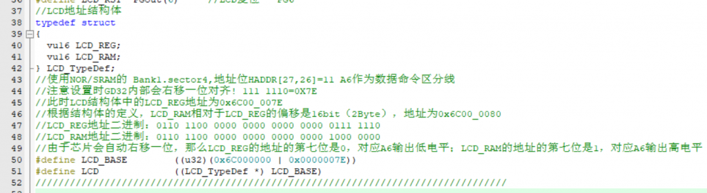
使用NOR/SRAM的 Bank1.sector4,地址位HADDR\[27,26\]=11，A6连接RS。
注意设置时GD32内部会右移一位对齐! 111 1110=0X7E
此时LCD结构体中的LCD\_REG地址为0x6C00\_007E
根据结构体的定义，LCD\_RAM相对于LCD\_REG的偏移是16bit（2Byte），地址为0x6C00\_0080
LCD\_REG地址二进制：0110 1100 0000 0000 0000 0000 0111 1110
LCD\_RAM地址二进制：0110 1100 0000 0000 0000 0000 1000 0000
由于芯片会自动右移一位，那么LCD\_REG的地址的第七位是0，对应A6输出低电平；LCD\_RAM的地址的第七位是1，对应A6输出高电平。
为什么会右移请参考下方《FSMC发送地址偏移》章节。
上述这种实现过程十分巧妙，利用结构体地址递增的特性，当然你也可以直接定义LCD\_REG和LCD\_RAM的地址。
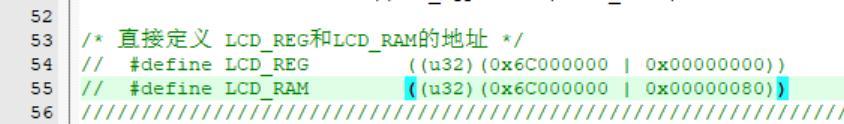
这样依旧能够实现！重要的内容再重复一遍：
_在传输的过程中地址线和数据线是同时有数据在传输的！_
那么我们就可以利用地址线上的其中一根的状态作为RS的输入。
FSMC基础
手册里的东西东西太多了，放到最后好啦，本来不想写基础内容的，但是肯定会有同学好奇上述的地址是怎么得到的，为什么是0x6C00\_0000中的6C，还有配置的操作等等，别人的文章已经讲的很详细了，我也补充一些。
FSMC框图
FSMC包含四个主要模块：AHB总线(包含FSMC配置寄存器)；HCLK时钟；NOR闪存和PSRAM控制器；NAND闪存和PC卡控制器；
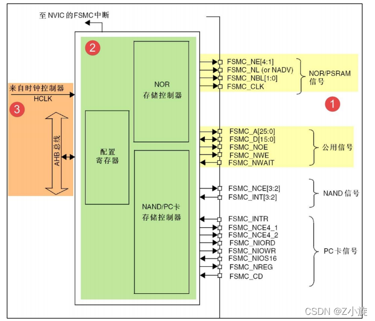
可以看出我们连接LCD主要用到了图中黄色标出的引脚。
FSMC地址映射
我们之前操作的地址是从哪里得到的呢？
请看下图地址映射，从0x6000 0000 到0x9FFF FFFF 这1.0GB大小的空间被作为FSMC的地址：
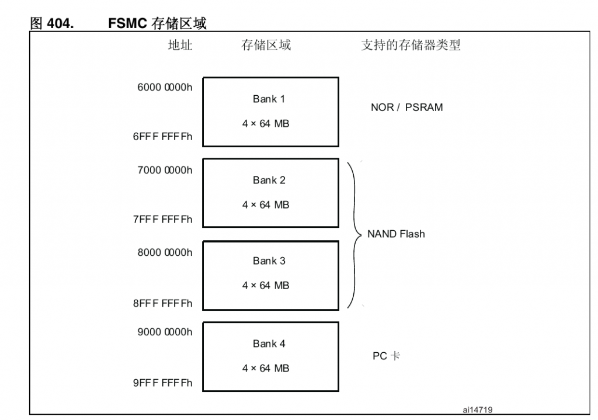
地址映射指的是MCU的寻址范围，也可以理解为可以设置存储地址，首先上述我们设置的地址必须是在0x6000\_0000 - 0x9FFF\_FFFF之间的，接着，由于我们使用的是PSRAM时序，使用的是BANK1，所以再一次缩小范围：0x6000\_0000 - 0x6FFF\_FFFF，这就是我们的可用地址。
如果从Cortex-M3内核的角度来看，左侧的存储空间分配是针对该内核的地址空间，而右侧是STM32的FSMC（Flexible Static Memory Controller）外设的地址映射。在这个地址映射中，FSMC用于连接NOR Flash、PSRAM（Pseudo Static RAM）、SRAM（Static RAM）、NAND Flash以及PC卡等外部存储器设备，这些设备的地址范围都位于External RAM地址空间内。
因此，通过这样的地址映射，访问由FSMC控制的外部存储器就像访问STM32的片上外设寄存器一样，因为这些外部存储器设备的地址被映射到了Cortex-M3的地址空间中。这种映射使得处理器能够通过相应的地址访问外部存储器，实现对外部存储器的读写操作，同时也方便了程序员对这些外设的控制与配置。如下图所示：
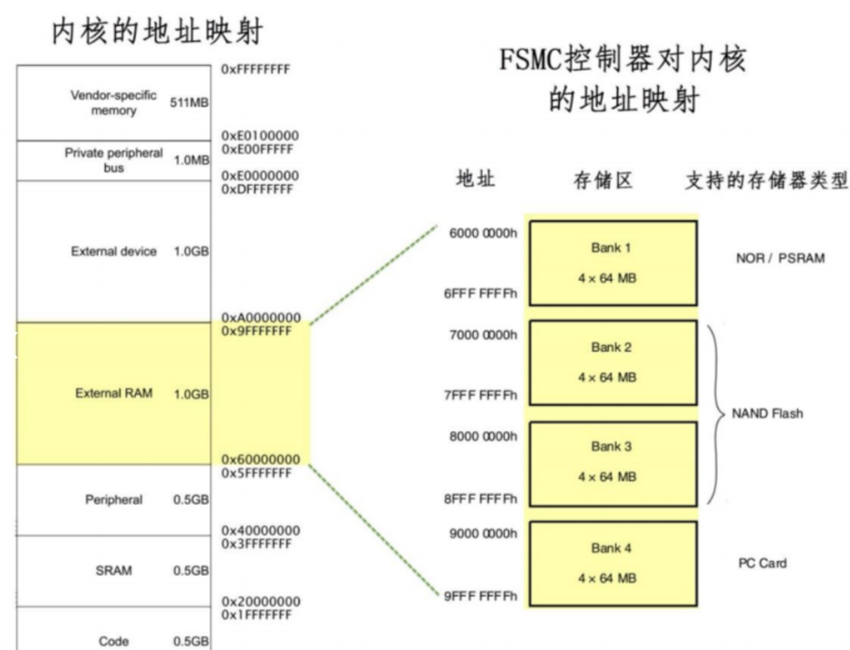
FSMC将整个存储区域划分为4个Bank区域。对于NOR和SRAM存储器，它们只能使用Bank1的地址。每个Bank内部又分成4个小块，每个小块都有相应的控制引脚用于连接片选信号，例如FSMC\_NE1/2/3/4。
当STM32访问地址空间范围0x6C000000-0x6FFFFFFF时，实际上是在访问FSMC的Bank1的第一块区域。
在这个访问过程中，FSMC\_NE1引脚会被自动设置为低电平，也就是LCD会自动被片选
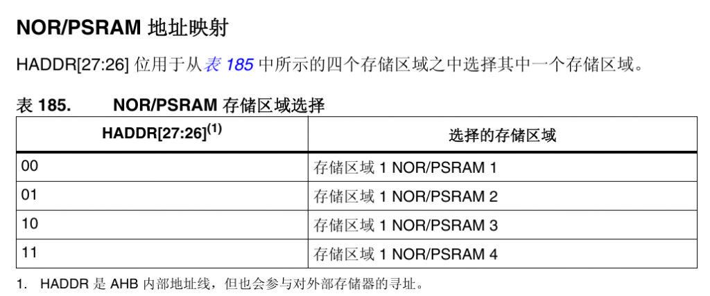
我们使用的是NE4，所以我们需要设置HADDR\[27:26\]这个两位为11，那么这两位在哪里呢？
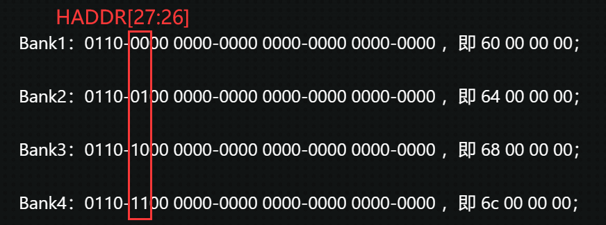
所以这两位并不需要接线，在我们向0x6x00\_0000写数据的时候，自动就区分出来了。并且在MCU向这个地址写数据的同时，会自动将LCD\_CS（连接着单片机的FSMC\_NE3引脚）拉低，实现片选。
FSMC发送地址偏移
在上述章节中提到了芯片会自动右移一位然后发送，这是为什么呢？
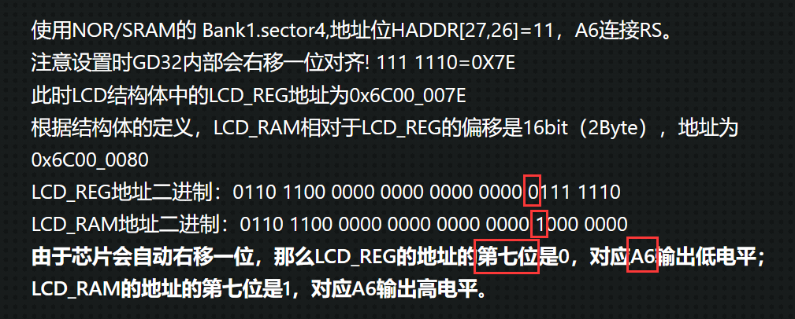
原因：还是要提到前面说过的重点
_在传输的过程中地址线和数据线是同时有数据在传输的！_
对于存储器设备，它们的数据宽度可以是8位、16位、32位等。当存储器设备的数据宽度为16位或32位时，单字节的访问可能会受到限制，因为存储器设备可能只支持16位或32位的读写操作。
比如16位宽度的NOR Flash，它只支持16位或32位的写入，那么对于8位数据的写入可能就不被支持。在这种情况下，如果需要写入8位的数据，可能需要将其拆分为两次16位的写入。也就是说MCU内部的存储逻辑与存储设备的存储逻辑（最小存储单元）不一定是一样的。
我们还是掏出excel表格模拟：
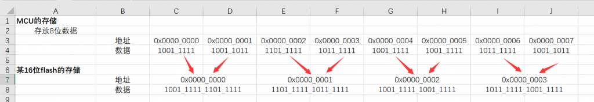
显而易见，MCU与FSMC连接的FLASH的存储最小单元是不一样的，但是可以从双方的起始地址中找到规律，发送的时候将单片机的地址向右偏移两位（本质是除以2），然后数据线上发送16位数据即可：
0000\_0000 - > 0000\_0000
0000\_0002 - > 0000\_0001
0000\_0004 - > 0000\_0002
这样操作下来，双方的地址就对应上了！
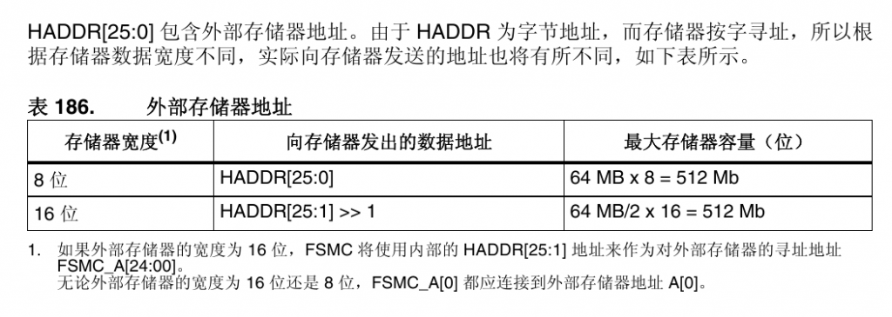
对于32位数据，由上述理可得，发送的时候将单片机的发送地址向右偏移4位，可以理解为一次发送4个单片机的内存最小单元8bit，作为32位flash的内存最小单元32bit进行存储，当然数据线上发送32位数据。
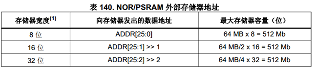
FSMC寄存器
- FSMC\_BCR（控制寄存器）：
- 功能： 用于配置要控制的存储器类型、数据线宽度以及信号有效极性等参数。
- 数量： 有4个寄存器，分别对应于4个不同的存储区域。
- FSMC\_BTR（片选时序寄存器）：
- 功能： 用于配置SRAM访问时的各种时间延迟，例如数据保持时间、地址保持时间等。
- 数量： 有4个寄存器，分别对应于4个不同的存储区域。
- FSMC\_BWTR（写时序寄存器）：
- 功能： 与FSMC\_BTR寄存器控制的参数类似，专门用于控制写时序的时间参数。
- 数量： 有4个寄存器，分别对应于4个不同的存储区域。
这些寄存器为FSMC提供了灵活性，使得可以根据需要配置不同的存储器类型，并通过调整时序参数来适应不同的存储器设备。由于NOR/PSRAM/SRAM设备和NAND/PC卡设备使用相同的控制器，但有专用的寄存器，这使得可以对这两类设备进行分别的配置。每个寄存器都有四个，分别对应于4个不同的存储区域，为用户提供了更多的配置选项。
FSMC时钟
FSMC（Flexible Static Memory Controller）外设与STM32的AHB总线相连，其时钟信号来源于HCLK（默认时钟频率为72MHz）。控制器的同步时钟输出是通过对HCLK进行分频获得的。
通过FSMC\_BTR寄存器的CLKDIV位，可以配置FSMC的时钟频率。具体而言，分频系数（CLKDIV）可以设置为2至16之间的值，从而调整FSMC\_CLK的频率。
FSMC可以应用于同步类型的NOR FLASH芯片，通过FSMC\_CLK引脚实现同步通讯。同步通讯需要一个稳定的时钟信号，而FSMC可以提供可配置的时钟频率，以适应不同的同步存储器设备。
对于异步类型的存储器，由于其不使用同步时钟信号，因此FSMC的时钟分频配置对其没有影响。在异步通讯中，存储器设备和FSMC之间的数据传输是根据异步时序来进行的，而不受FSMC\_CLK频率的影响。这种配置灵活性允许FSMC适应不同类型的存储器设备，无论是同步还是异步的。
一般来说都是使用异步通信，就是不需要同步触发（在HCLK的上升沿），不带有时钟信号。
FSMC模式
对于存储器来说，可以根据其与控制器之间的通信方式分为两类：带时钟信号的同步存储器和不带时钟信号的异步存储器。
同步存储器（Synchronous Memory）：
同步存储器是通过与时钟信号同步来进行数据传输的存储器。在FSMC中，同步存储器可能涉及到以下参数：
- 同步突发访问的等待延迟（DATLAT）：
- 这是在同步突发访问中获取第一个数据所需的等待延迟。DATLAT的设置涉及到确保同步存储器能够在时钟信号下实现有效的数据读取。
异步存储器（Asynchronous Memory）：
异步存储器是通过无需时钟信号同步的方式进行数据传输的存储器。在FSMC中，异步存储器可能需要设置以下时间参数：
- 地址建立时间（ADDSET）：
- 这是在进行异步突发访问时，地址信号建立所需的时间。它指定了在发出地址信号后需要等待多久才能有效地读取或写入数据。
- 数据建立时间（DATAST）：
- 这是在进行异步突发访问时，数据信号建立所需的时间。它指定了在地址建立后，数据信号需要等待多久才能被有效地读取或写入。
- 地址保持时间（ADDHLD）：
- 这是指在异步访问过程中，地址信号需要保持的最短时间。ADDHLD的设置确保地址信号在一定时间内保持不变，以确保可靠的数据传输。
FSMC 外设支持输出多种不同的时序以便于控制不同的存储器,
综合了 SRAM／ROM、PSRAM 和 NOR Flash 产品的信号特点，定义了 ABCD 四种不同的异步时序模型。选用不同的时序模型时，需要设置不同的时序参数。
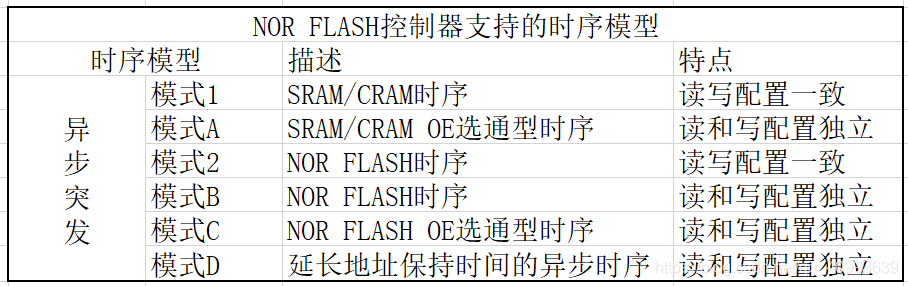
FSMC的四种异步模式
FSMC时序
（截取自：[27\. FSMC—扩展外部SRAM — \[野火\]STM32库开发实战指南——基于野火霸道开发板 文档 (embedfire.com)](https://doc.embedfire.com/mcu/stm32/f103badao/std/zh/latest/book/FSMC.html#id6)）
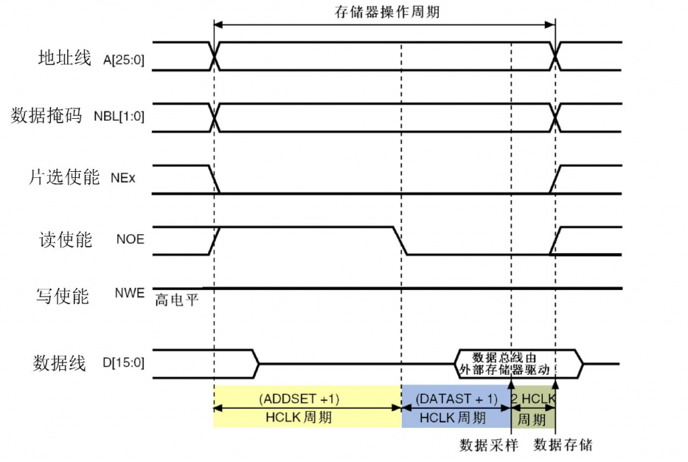
模式A读时序
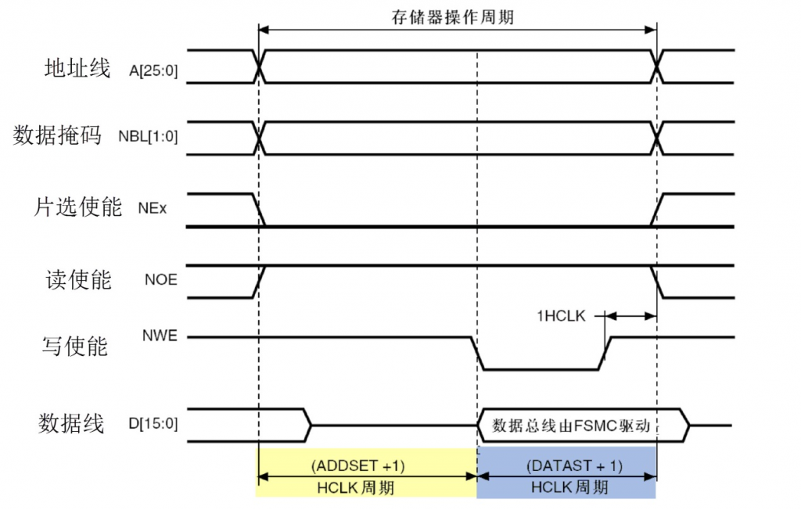
模式A写时序
当内核发出访问某个指向外部存储器地址时，FSMC外设会根据配置控制信号线产生时序访问存储器，上图中的是访问外部SRAM时FSMC外设的读写时序。
以读时序为例，该图表示一个存储器操作周期由地址建立周期(ADDSET)、数据建立周期(DATAST)以及2个HCLK周期组成。在地址建立周期中，地址线发出要访问的地址， 数据掩码信号线指示出要读取地址的高、低字节部分，片选信号使能存储器芯片（LCD的显示IC）；地址建立周期结束后读使能信号线发出读使能信号， 接着存储器通过数据信号线把目标数据传输给FSMC，FSMC把它交给内核。
写时序类似，区别是它的一个存储器操作周期仅由地址建立周期(ADDSET)和数据建立周期(DATAST)组成， 且在数据建立周期期间写使能信号线发出写信号，接着FSMC把数据通过数据线传输到存储器中。
可以看到下图中设置ADDSET和DATAST的时候，ADDSET设置为0，但实际是1个HCLK。DATAST设置为8，但实际上8+1个HCLK。
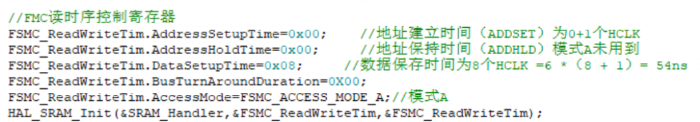
因为，上图中：
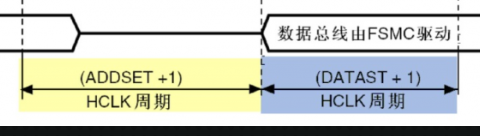